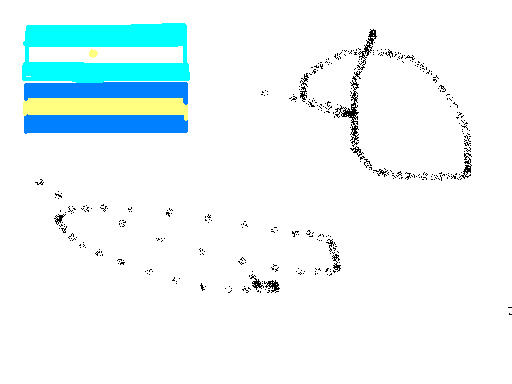
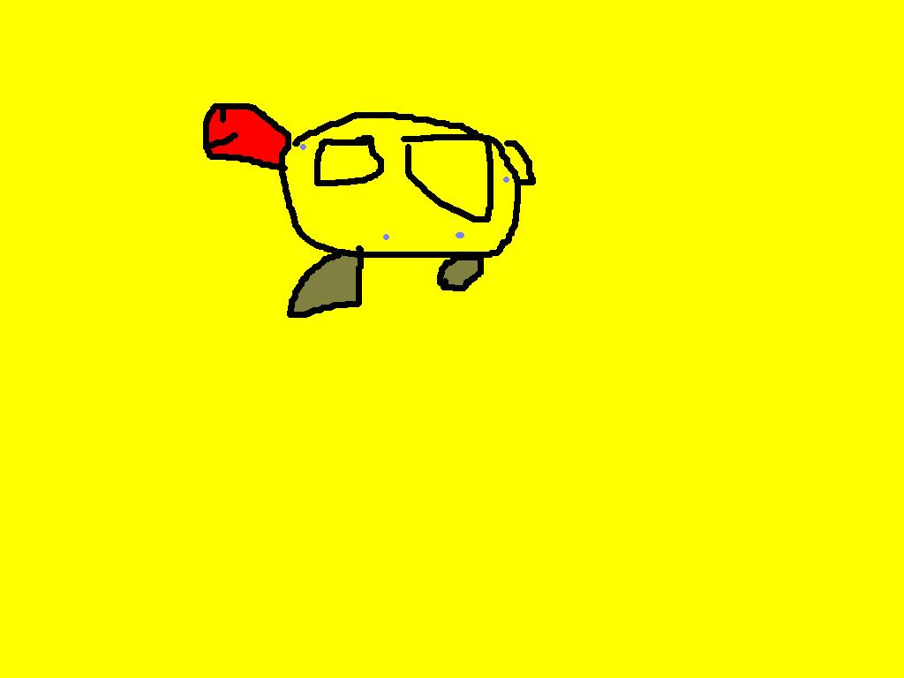
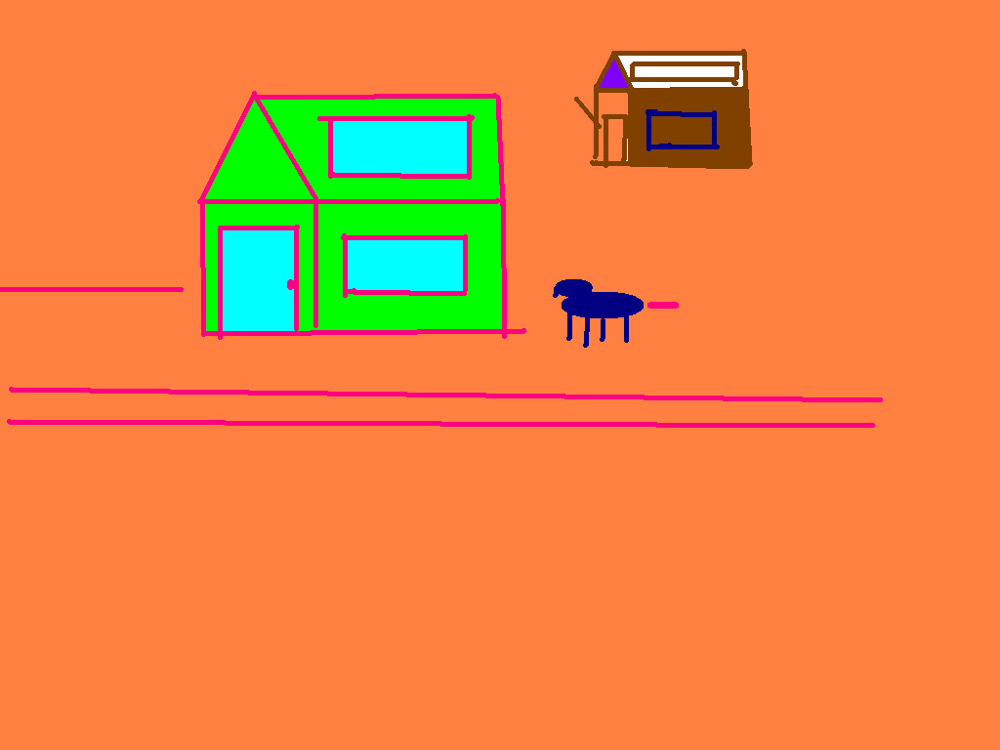

2007
Desde muy chica, mis juguetes favoritos siempre fueron los lapices. Pero inevitablemente, como niña en los 2000, mi atracción principal pasó a ser la computadora. Pero lejos estaba yo de descargarme juegos o mirar videos en youtube, me pasaba horas y horas en paint. Tengo miles de archivos con nombres como "hbdsjbfhsbh"(porque de más está decir que no sabía escribir, pero con paint me las ingeniaba).
Obra de arte
Fantastico retrato de lo que yo pienso, es mi perro, aunque las aletas y la cabeza roja me hacen dudar un poco. No hay dudas que ejercitar la creatividad siempre fue parte de mi, y aunque lejos estaba de saber que iba a estudiar diseño, creo que mis primeros pasos arrancaron en el paint de la compu de escritorio que estaba en mi casa.
Mi [mini] yo diseñadora
Soy Valentina, tengo 20 años, soy oriunda del sur del país y estoy estudiando diseño en Buenos Aires. Esta ilustración fue mi primer trabajo como diseñadora (trabajo no remunerado, a mis papas seguramente, y sin que nadie me lo pidiera). Me emociona encontrar en archivos viejos, la forma en la que mi yo de seis o siete años, desarrollaba su creatividad. Te invito a conocer un poco más acerca de mi diseñadora en formación.
